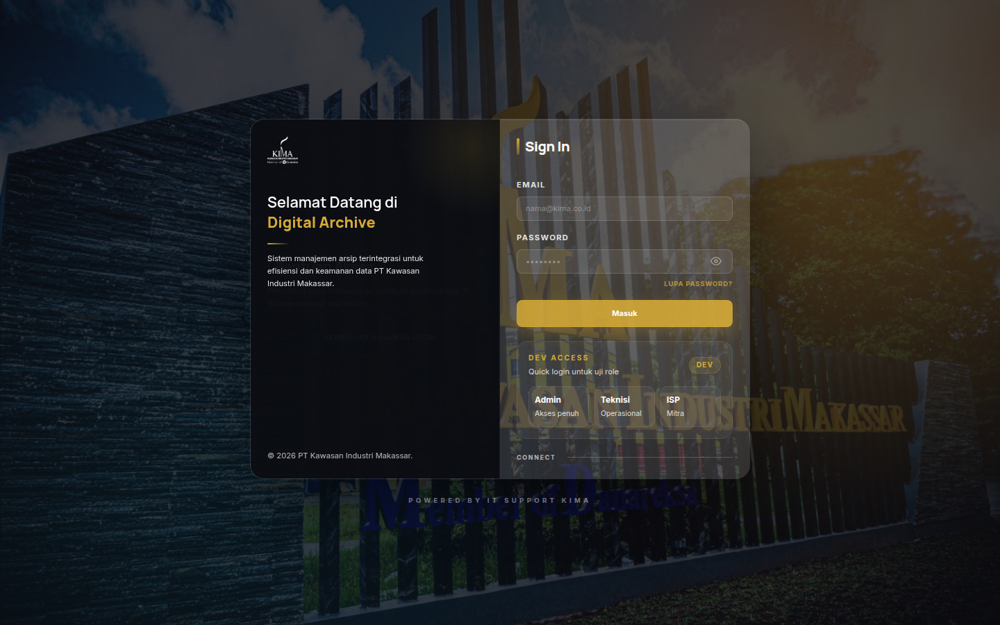
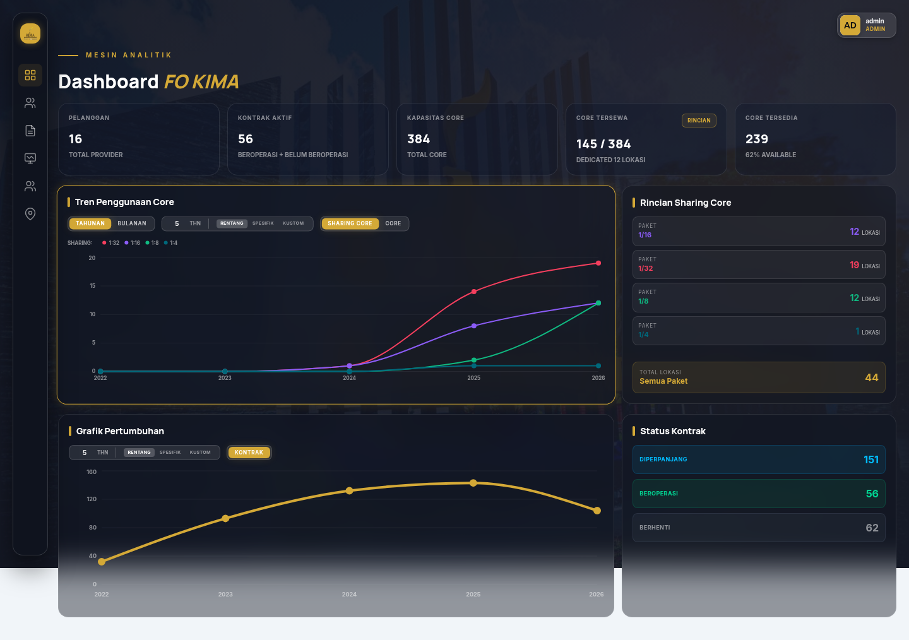
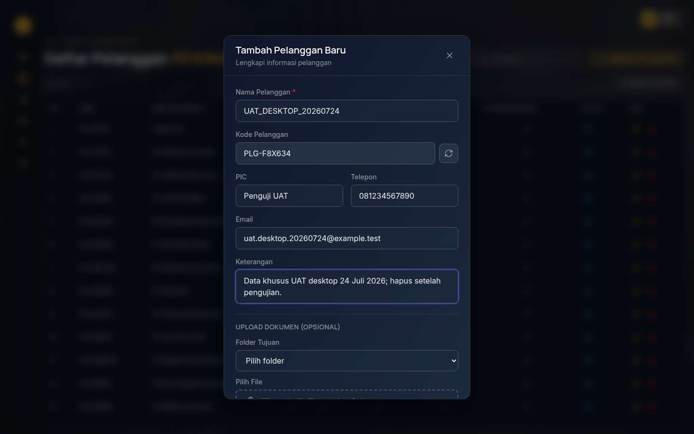
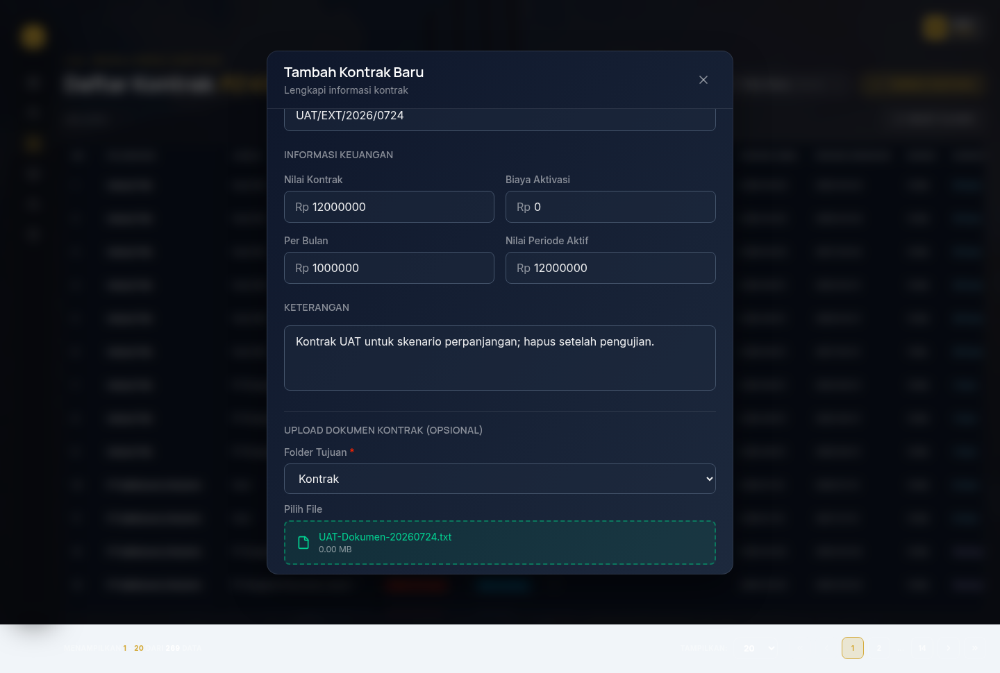
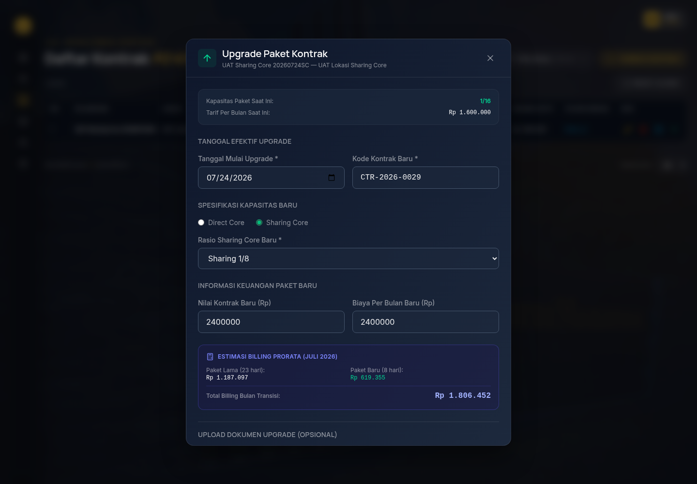
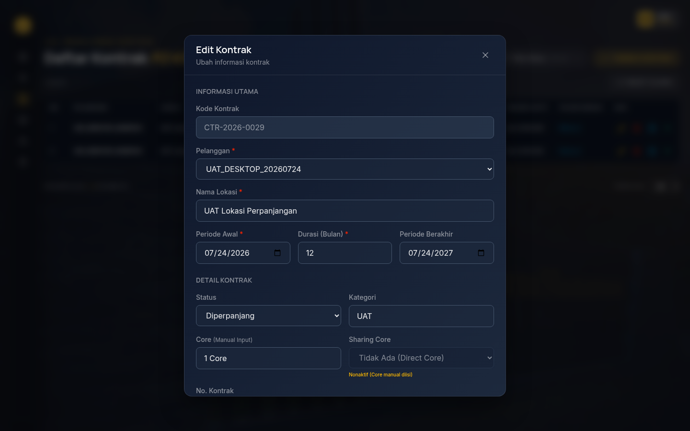
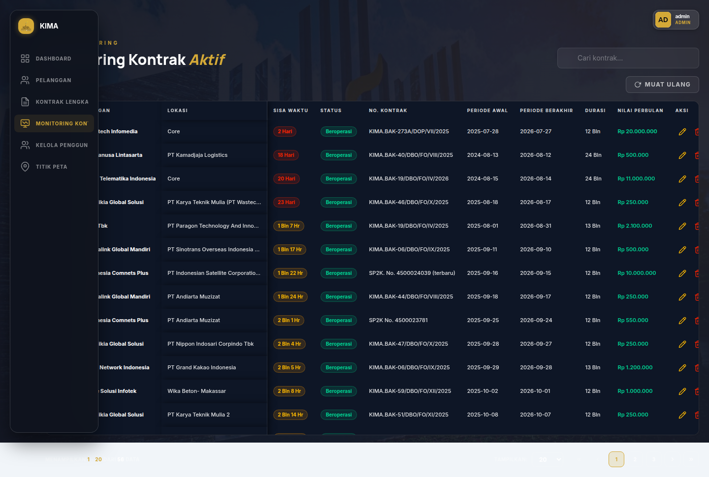
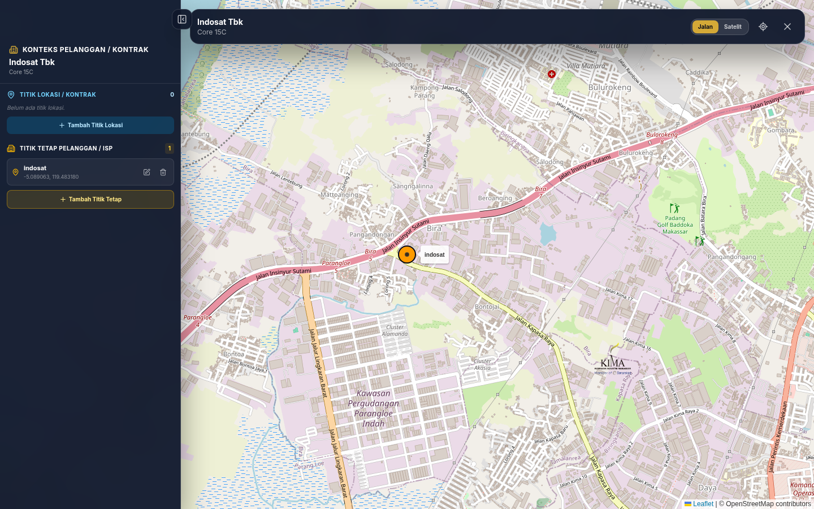
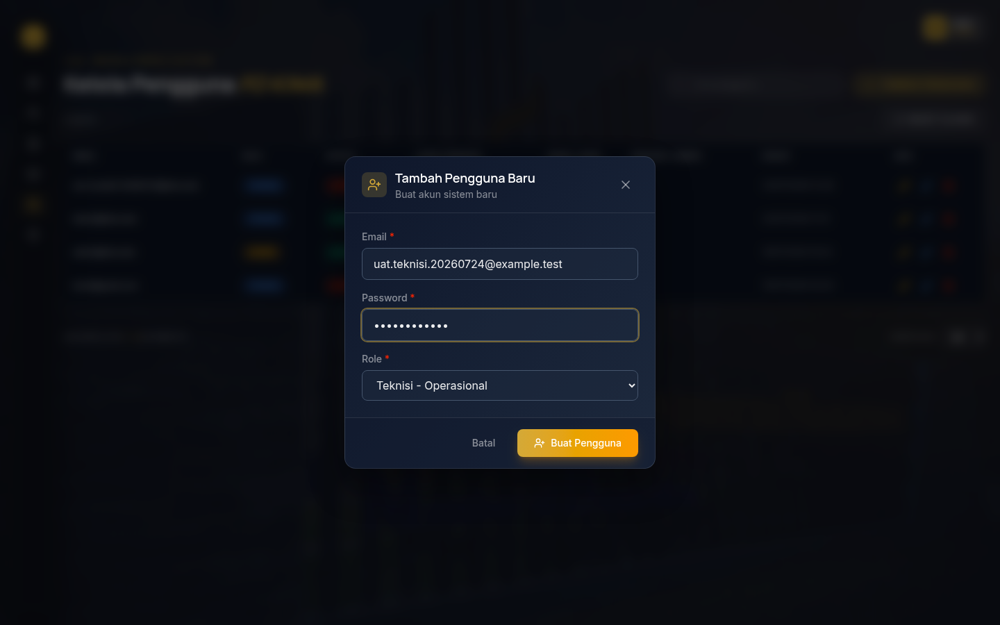

Panduan operasional untuk Admin dan Teknisi. Versi dokumen: 24 Juli 2026.
Dokumen ini menjelaskan cara memakai aplikasi sehari-hari. Untuk prosedur pengujian, gunakan dokumen UAT; untuk instalasi, gunakan panduan setup.
1. Akses dan role
Buka URL aplikasi yang diberikan administrator.
Masukkan email dan password, lalu klik Masuk.
Halaman yang tersedia mengikuti role akun.
Role
Akses
Admin
Dashboard, Pelanggan, Kontrak Lengkap, Monitoring Kontrak, Kelola Pengguna, dan Titik Peta.
Teknisi
Titik Peta.
ISP
Sesuai penugasan pelanggan yang diaktifkan administrator.

Halaman login.
2. Dashboard
Admin membuka Dashboard untuk melihat ringkasan pelanggan, kontrak aktif, kapasitas Core, tren, dan status kontrak. Klik Rincian pada kartu Core Tersewa untuk melihat Direct Core dan Sharing Core per pelanggan.

Dashboard Admin.
3. Pelanggan
Buka Pelanggan dan klik Tambah Pelanggan.
Isi minimal Nama Pelanggan; lengkapi PIC, telepon, email, dan keterangan bila tersedia.
Klik simpan, lalu cari pelanggan pada tabel untuk memastikan data tersimpan.
Gunakan aksi Edit untuk mengubah data. Hapus hanya pelanggan yang tidak lagi memiliki kontrak yang perlu disimpan.

Form tambah pelanggan.
4. Kontrak
Tambah dan edit
Buka Kontrak Lengkap, lalu klik Tambah Kontrak.
Pilih pelanggan; isi lokasi, periode, kode/nomor kontrak, nilai, dan durasi.
Pilih salah satu: Direct Core atau Sharing Core. Jangan isi keduanya bersamaan.
Opsional: unggah dokumen dan pilih kategorinya.
Simpan dan pastikan kontrak tampil pada tabel.

Form tambah kontrak.
Perpanjangan
Klik Perpanjang Kontrak, isi periode/nilai baru, lalu simpan. Kontrak lama tetap tersimpan sebagai histori berstatus Diperpanjang dan sistem membuat record periode baru.
Upgrade paket
Klik Upgrade Paket Kontrak pada kontrak aktif.
Isi tanggal efektif, kode kontrak baru, kapasitas baru, serta nilai.
Untuk rasio, pilih mode Sharing Core dan pilih rasio baru.
Klik Upgrade Paket.
Tanggal upgrade wajib setelah tanggal mulai kontrak. Kontrak lama berakhir satu hari sebelum upgrade; kontrak baru dimulai pada tanggal upgrade. Untuk koreksi pada hari pertama, gunakan Edit Kontrak.

Upgrade Sharing Core.
5. Dokumen dan Google Drive
Pilih file pada area unggahan saat tambah/edit/perpanjang/upgrade kontrak.
Pilih kategori: Kontrak, BAK-PKS, atau Dokumen Lain.
Simpan transaksi. Klik tautan Drive pada detail kontrak untuk membuka dokumen/folder.
Hapus dokumen melalui aksi hapus jika tidak diperlukan.
Folder Drive disusun berdasarkan pelanggan → lokasi → periode kontrak → kategori dokumen.

Dokumen kontrak yang terunggah.
6. Monitoring Kontrak
Buka Monitoring Kontrak, gunakan pencarian dan filter status, lalu periksa periode, sisa waktu, kapasitas, dan nilai. Aksi edit, perpanjang, dan upgrade tersedia pada baris yang sesuai.

Monitoring kontrak.
7. Titik Peta
Buka Titik Peta dan pilih pelanggan/lokasi pada tabel.
Klik Tambah Titik Lokasi, tentukan koordinat, isi label, lalu simpan.
Gunakan ikon edit/hapus pada sidebar untuk mengelola titik.
Gunakan Tambah Titik Tetap untuk titik kantor/ISP.

Peta dan sidebar konteks lokasi.
8. Kelola Pengguna
Admin membuka Kelola Pengguna.
Klik Tambah Pengguna, isi data dan password sementara.
Gunakan Edit untuk memperbarui data/role.
Gunakan Nonaktifkan untuk menghentikan akses tanpa menghapus histori audit.
Admin aktif terakhir tidak dapat dinonaktifkan. Reset password membuat pengguna harus login ulang.

Form kelola pengguna.
9. Masalah umum
Kondisi
Tindakan
Login ditolak
Periksa email/password atau hubungi administrator untuk status akun.
Data tidak tampil
Muat ulang halaman dan periksa filter/pencarian serta hak akses role.
Upload gagal
Periksa koneksi, ukuran/format file, kategori, dan konfigurasi Google Drive.
Upgrade ditolak
Pastikan tanggal upgrade setelah tanggal mulai kontrak.
Tautan Drive tidak terbuka
Pastikan akun memiliki izin yang sesuai lalu hubungi administrator.
Selalu periksa data sebelum menyimpan atau menghapus perubahan.